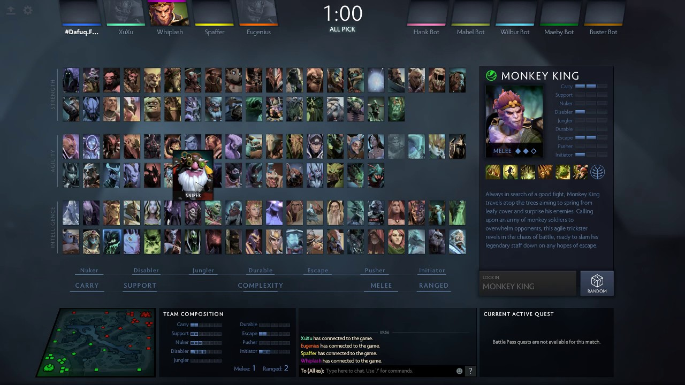
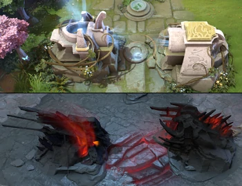
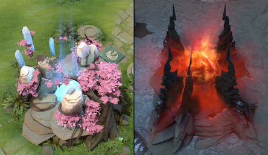

O hře Dota 2
Něco málo z wikipedie
Dota 2 je strategická počítačová hra žánru MOBA (Multiplayer online battle arena) uznaná v mnoha zemích jako plnohodnotný sport,
vyvíjená firmou Valve Corporation. Jedná se o „stand-alone“ remake Defense of the Ancients (DotA), oblíbené modifikace (mapy) ze hry
Warcraft III.
Vývoj hry začal roku 2009, kdy Valve najalo jako hlavního designéra vývojáře původního módu DotA s přezdívkou "Icefrog". Hra byla
oficiálně oznámena 13. října 2010 na portálu Game Informer. Přestože byla Dota 2 kritizována pro příliš pozvolnou křivku učení, je dnes
třetí nejhranější hrou z platformy Steam s denními špičkami přes 600 000 současně hrajících hráčů.

Začátek hry
- Na začátku hry hráči zakazují hrdiny. (tohoto hrdinu nelze v této hře zvolit)
- Po této fázi si hráči vyberou hrdinu, za kterého chtějí hrát, linku, na které chtějí hrát, a předměty do začátku.
- Jakmile se spustí hra, mají čas se přesunout na místa, kde se objevují runy se zlaťáky. Ty se objevují dohromady 4.
- Tými se snaží kromě run získat takzvanou první krev, neboli zabít nepřítele jako 1. a tím získat výhodu v podobě zlaťáků a zkušeností.
- Po získání těchto věcí se přemisťují na své linky.

Budovy a creepové
- Mezi budovy patří věže, kasárny, oltáře a fontány.
- Creepové jsou takzvaní linkoví creepové, ti se spawnují každých 30 sekund.
- Po zničení všech nepřátelských barikád získá opačný tým super creepy, ti mají více životů a větší poškození.
- Nebo neutrální creepové. Tedy neútočí, dokud na ně není zaútočeno.
- Nejsilnější neutrální creep je Roshan.

Cíl hry
- Hrdinové se zlepšují a získávají zkušenosti a zlaťáky zabíjením nepřátelských hrdinů a creepů.
- Poté se musí probojovat přez věže.
- Na každé lince se nachází tři věže. Každá je o trochu silnější než předešlá.
- Ve hře Dota 2 vyhrává tým, který dříve zničí nepřátelský oltář. V cestě mu však stojí věže a nepřítelští hrdinové.